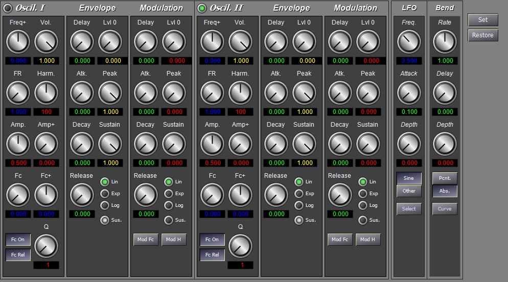

The BuzzSynth instrument is a subtractive synthesis instrument using a "BUZZ" generator, i.e., a closed form of the Fourier series.The instrument includes two tone generators, each consisting of a buzz oscillator, volume envlope, resonant low pass filter, and modulation envelope. The envelope generators are five segments each. A LFO oscillator and pitch bend unit are applied to both sound generators.
The BUZZ oscillator is defined by the series shown below. This series has a closed form, shown in the the third forumla.

In this series, N is the maximum partial with the amplitude of each partial set by ak. When a is less than 1, the amplitude decreases exponentially for higher partials. When a is greater than 1, the amplitude increases as the partial increases. The parameter Theta represents the fundamental frequency and the ratio of Theta to Beta sets the frequency difference between adjacent partials. For example, when Theta = Beta, all harmonics are included, but, when Beta = 2 Theta, only odd harmonics are included. A wide variety of waveforms can be created by varying the three values of N, a, and Beta.
The modulation envelope can be applied to the oscillator harmonic amplitude, and/or filter cutoff frequency. Each modulation destination has an enable flag and a scaling value. The output of the envelope is multiplied by the scaling value and then added to the respective input of the oscillator or filter. Bit 0 (0x01) of the mod flags turns on modulation of the filter. Bit 1 (0x02) turns on modulation of the harmonic amplitude (a). Bit 4 (0x10) enables the filter. If this bit is not set, the oscillator signal is not passed through the filter. Bit 5 (0x20) causes the filter frequency to be calculated relative to the oscillator frequency. In other words, the filter cutoff is the oscillator frequency plus the modulation frequence, and causes the filter cutoff to track the note pitch. When bit 5 is clear, the filter frequency is absolute. Bit 8 (0x100) of the mod flags is used to enable the generator. When clear, the generator is turned off. Each of these flags can be set directly as synthesis parameters, but in the instrument file, the flags are combined into a single attribute (mod).
The BuzzSynth editor is shown below.
Each of the two oscillators is configured independently. The lamp switch at the top enables the oscillator.
The following table shows the parameter numbers and the equivalent XML tag and attribute values for the BuzzSynth instrument. The value of GN is the generator number (1 or 2) multiplied by 256. The genx name is either gen1 or gen2.
Parameter |
Tag |
Attribute |
Name |
Use |
GN |
gen |
gn |
genx |
Selects the generator (GN), (gen1 or gen2). |
GN+30 |
|
mod |
genx.mod |
Set modulator options for this generator. (See above) |
GN+31 |
|
|
genx.fcon |
Enable the filter. |
GN+32 |
|
|
genx.fcrel |
Filter frequency is relative to note frequency. |
GN+33 |
|
|
genx.fcmod |
Apply modulation envelope to filter frequency. |
GN+34 |
|
|
genx.hmod |
Apply modulation envelope to harmonic amplitude. |
GN+35 |
|
|
genx.on |
Enable this generator. |
GN+0 |
|
vol |
genx.volume |
Volume. |
5 |
osc |
frq |
|
Base frequency (set by note start parameters). |
GN+1 |
|
fr |
genx.fr |
Frequency multiplier. |
GN+2 |
|
amp |
genx.amp |
Harmonics amplitude (a). |
GN+3 |
|
hscl |
genx.hscl |
Harmonics amplitude modulation scale. |
GN+5 |
|
fc |
genx.fc |
Filter frequency base (semitones relative to oscillator frequency). |
GN+6 |
|
fscl |
genx.fscl |
Filter envelope scale. |
GN+7 |
|
q |
genx.q |
Filter resonance (Q). |
GN+8 |
|
harm |
genx.harm |
Maximum harmonic number (N). |
GN+9 |
|
hr |
genx.hr |
Harmonics ratio (Beta/Theta). |
GN+10 |
egv |
rt0 |
genx.egvr0 |
Volume envelope rate 0. |
GN+11 |
|
lv0 |
genx.egvl0 |
Volume envelope level 0. |
GN+12 |
|
rt1 |
genx.egvr1 |
Volume envelope rate 1. |
GN+13 |
|
lv1 |
genx.egvl1 |
Volume envelope level 1. |
GN+14 |
|
rt2 |
genx.egvr2 |
Volume envelope rate 2. |
GN+15 |
|
lv2 |
genx.egvl2 |
Volume envelope level 2 (sustain). |
GN+16 |
|
rt3 |
genx.egvr3 |
Volume envelope rate 3 (release). |
GN+17 |
|
ty |
genx.egvty |
Volume curve type (0=linear,1=exponential). |
GN+18 |
|
son |
genx.egvon |
Volume sustain on. (0=no sustain). |
GN+20 |
egm |
rt0 |
genx.rt0 |
Modulation envelope rate 0. |
GN+21 |
|
lv0 |
genx.egml0 |
Modulation envelope level 0. |
GN+22 |
|
rt1 |
genx.egmr1 |
Modulation envelope rate 1. |
GN+23 |
|
lv1 |
genx.egml1 |
Modulation envelope level 1. |
GN+24 |
|
rt2 |
genx.egmr2 |
Modulation envelope rate 2. |
GN+25 |
|
lv2 |
genx.egml2 |
Modulation envelope level 2 (sustain). |
GN+26 |
|
rt3 |
genx.egmr3 |
Modulation envelope rate 3 (release). |
GN+27 |
|
ty |
genx.egmty |
Modulation curve type (0=linear,1=exponential). |
GN+28 |
|
son |
genx.egmon |
Modulation sustain on. (0=no sustain). |
16 |
lfo |
frq |
lfofrq |
LFO Frequency |
17 |
|
wt |
lfowt |
LFO wavetable index |
18 |
|
rt |
lfoatk |
LFO delay (attack rate) |
19 |
|
amp |
lfoamp |
LFO amplitude (depth). |
20 |
pb |
pbamp |
pbamp |
Pitch bend WT amount |
21 |
|
wt |
pbwt |
Pitch bend wavetable |
22 |
|
pbdur |
pbdur |
Pitch bend WT rate (absolute or percent of duration). |
23 |
|
pbdly |
pbdly |
Pitch bend delay (seconds). |
24 |
|
pbmode |
pbmode |
Pitch bend mode (0=relative duration, 1=absolute duration) |
The XML format for the instrument is shown below.
<instr id="" type="BuzzSynth" name=" ">
<gen gn="" mod="" vol="" >
<osc frq="" foffs="" fr="" harm="" amp="" aoffs="" />
<flt fc="" foffs="" q="" />
<egs rt0="" lv0="" rt1="" lv1="" rt2="" lv2="" rt3="" ty="" son="" />
<egm rt0="" lv0="" rt1="" lv1="" rt2="" lv2="" rt3="" ty="" son="" />
</gen>
<lfo frq="" wt="" rt="" amp="" />
<pb frq="" wt="" rt="" amp="" />
</instr>